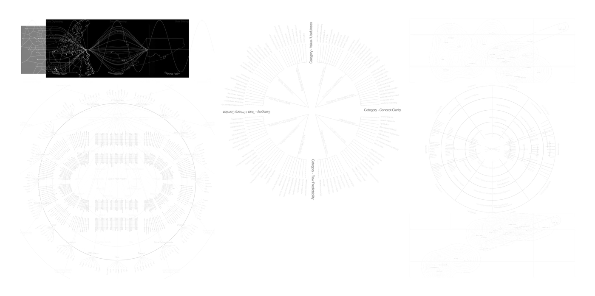
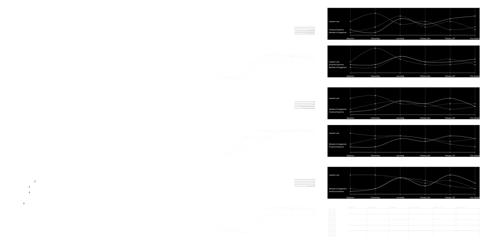
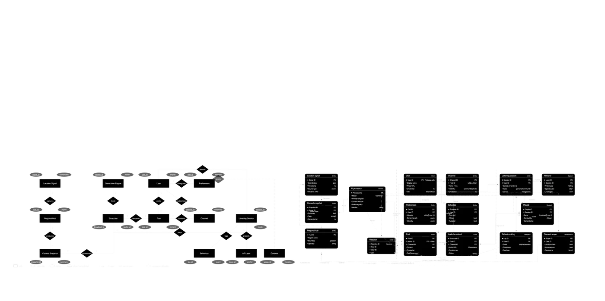

How I work.
Define Problem
I define the problem, then explore conceptually what value and potential it holds. Following a design thinking system, the problem definition stage maps the relationships between the entities that make up the problem, and this is where the research begins.
Information System

UX Research
I run research as a loop rather than a single pass. Each step of the user journey carries a hypothesis and a metric to test, personas and survey answers show who the product is for, and every test session is charted for cognitive load, emotional experience and motivation. What comes back sets the next round of the design.
Feedback Loop

Fullstack Integration
I use an LLM to build users’ interactions quickly, and form a system around them to run a user feedback loop. The backend collects and classifies every interaction by default, and a communication channel with users lets UX improvements go in right away.
At this point each piece of feedback is sorted three ways. The three judgements run at the same time, and together they build the roadmap for what to improve.
- 01Service valueValue JudgementCheck a component’s function fits the real value of the service
- 02Terms and visualsFunctional JudgementCheck the terminology and visual language have no problems
- 03CodeTechnical JudgementSolve problems in the code, such as bugs
Rapid Prototyping (LLM Driven)
